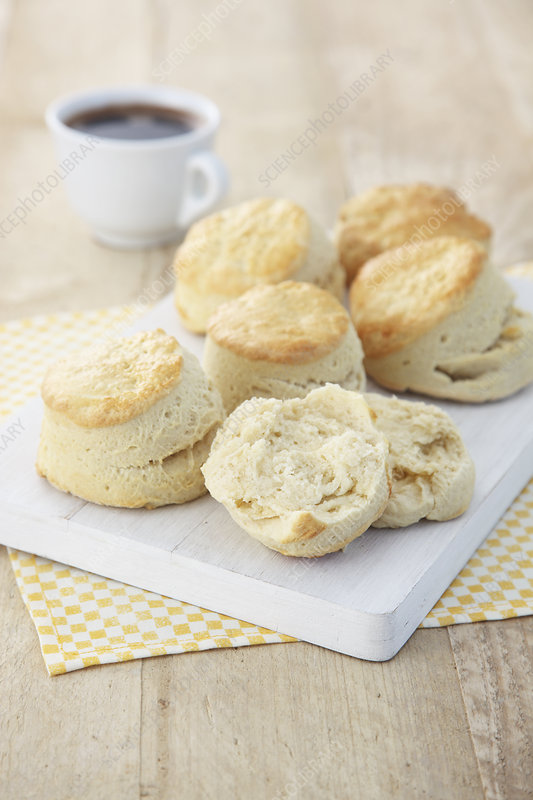

Easy Country Biscuits
Home

An Easy Side To Sit On Any Plate
There is no easier upgrade to any home cooked meal than a side of biscuits. This recipe makes 6 fluffy
biscuits with ingredients you have right now. So go ahead and make them with your next meal!
Ingredients
- 2 cups of all purpose flour
- 1 stick of cold butter (To help get it really cold, put it in the freezer for a 20 minutes)
- 1 tbsp of baking powder
- pinch of salt
- 3/4 cup of milk
Directions
- Preheat oven to 450.
- Put the flour into a large bowl, and grate the butter into the flour like a block of cheese.
It really helps if the butter is super cold.
- Add the baking powder.
- Gently combine all of these ingredients. Use your hands, and dont smash up your butter.
- Add the milk. Again, use your hands and mix into a dough.
- Sprinkle some flour down on your counter, and spread the dough.
- Cut the dough into rounds. No need for a fancy cutter, just use a drinking glass!
- Bake until the tops turn a nice golden brown. Ovens are different, and timing may vary based on how thick
you cut your dough. I also put mine on the top rack to keep the bottoms from getting too done.